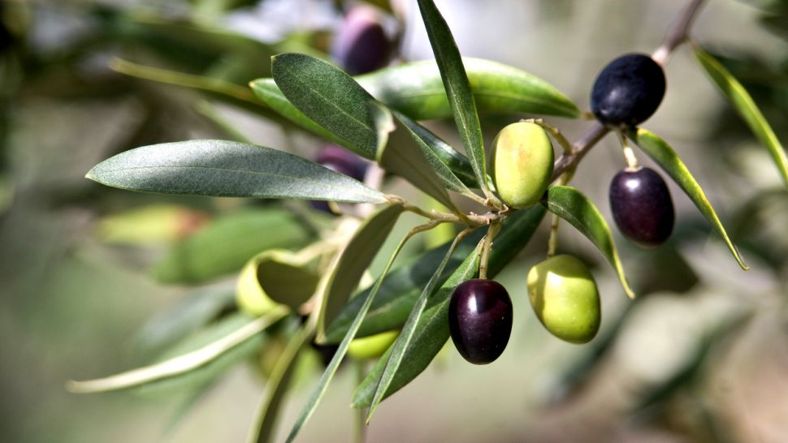
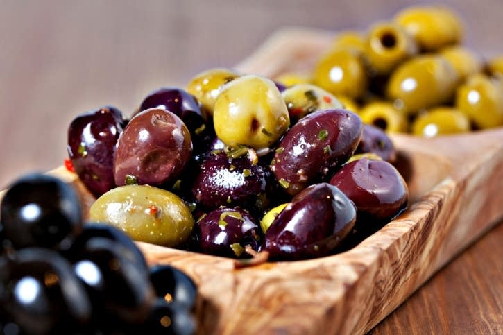
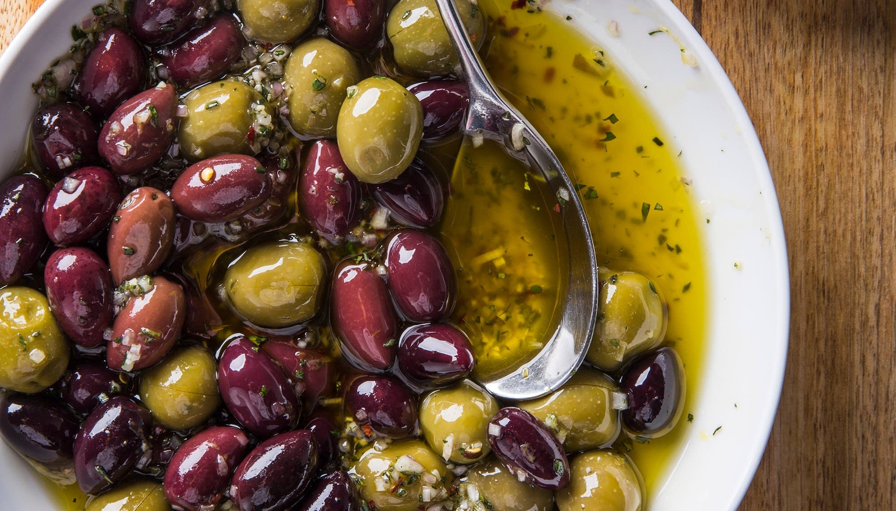

МАСЛИНАТА Е ИСТИНСКИ ЕЛИКСИР ЗА ТЯЛОТО И ДУШАТА
Обичате ли да похапвате вкусни маслинки между основните храненията или докато отпивате от аперетива си? Не можете да си представите салатата без леко солени и сочни маслини?
Чудесно сте се ориентирали, защото маслините са изключително полезни за здравето. Те са истински дар от природата.
МАСЛИНИ ЗА ДОБРО ЗДРАВЕ
Редовното похапване на маслини ни поддържа в отлична форма, защото в тях се съдържат полифеноли, които подпомагат тялото в борбата с възпалителните процеси. Според учените полифенолите имат антиоксидантно, противовъзпалително, противогъбично и антимикробно въздействие върху организма. Те съдействат за намаляването на оксидантния стрес на мозъчните клетки и подобряват паметта.
Мононаситените мазнини, които също откриваме в маслините, пък подпомагат производството на добрия холестерол, а също така намаляват рисковете от сърдечносъдови болести, свързани с високо кръвно налягане.
Маслини за силни очи и красива кожа
Ако искате да поддържате очите си в добро здраве и да се борите успешно с бръчките, то тогава консумирайте редовно маслини. В тях съдържанието на така ценните витамини А и Е е изключително високо. Тези витамините са антиоксиданти, които се грижат за поддържането на здрави очи. Свежата и еластична кожа е гарантирана при наличнието им в нашето ежедневно меню. Например, ако си набавите от чудесните маслини от сорта итрана, наричани още черната перла на Лацио, ще съчетаете чудесен вкус със свежа визия.
Маслини за Добра форма
В маслините се съдържат полезни мазнини, които ни помагат да поддържаме добрата форма. Добрата новина е, че подпомагат храносмилателната система и намаляват усещането за глад. монаситените мазнини подпомагат премахването на излишната
Допълнителен бонус:
Черните маслини ни даряват със свежа енергия, благодарение на увеличеното съдържание на желязо в тях.
